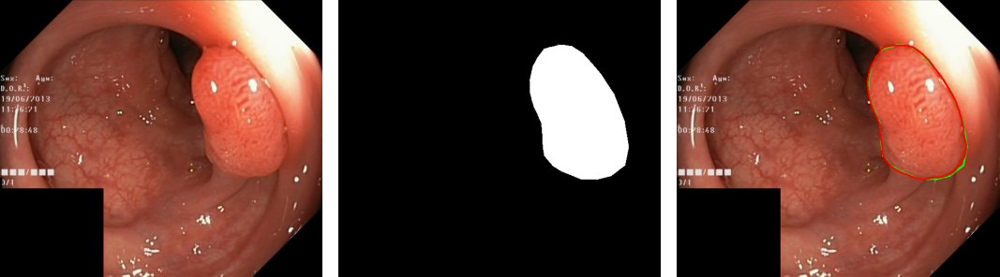

I am a Research Assistant at the Big-Matrix R&D Lab, a research group focused on AI for healthcare, and a Computer Science and Engineering graduate of North South University.
My research concerns the reliability of audio deepfake detection. I study how detectors can be made robust to adversarial perturbations, and why they fail to generalise across languages and unseen speech generators. I also work on biomedical image analysis, and am broadly interested in adversarial training and cross-lingual speech processing.
Iftikhar Ahmed, M. N. Mithila, A. Dhrubo, M. A. Qayum, M. Khan.
“DASF-Net: Dual-Adversarial Spectral Fusion for Cross-Lingual and Adversarially Robust Audio Deepfake Detection.”
Under review, 2026.
PDFA dual-branch LFCC and log-Mel architecture with cross-attention fusion, trained with a dual-adversarial objective: a gradient-reversed language discriminator for language invariance, and FGSM/PGD training for robustness to perturbations. Designed for transfer from English (WaveFake) to Bengali (BanglaFake).
Research
Multimodal AI for Treatment Response and Outcome Prediction in Lung Cancer
Ongoing · Big-Matrix R&D Lab · PI: Prof. Mohammad Monir Uddin
A proposed 24-month project with a partner cancer hospital to build and clinically validate a multimodal AI framework for lung cancer. It will combine CT and PET-CT imaging, histopathology, molecular markers (EGFR, ALK, ROS1, KRAS and PD-L1), laboratory results and treatment history to predict treatment response, toxicity, recurrence and survival. The plan compares early, intermediate, late and attention-based fusion, explains predictions to clinicians with SHAP, LIME and Grad-CAM, and validates the models on data from independent hospitals.
Cross-Lingual Audio Deepfake Detection: English and Bengali
Ongoing · Model design under review [S1]
Existing cross-lingual studies change the language and the speech generator at the same time, so they cannot say which one causes a detector to fail. This project separates the two effects using English and Bengali speech, and will be released with a fully reproducible codebase.
An end-to-end segmentation pipeline on Kvasir-SEG, a set of 1,000 colonoscopy frames with pixel-level polyp masks. A U-Net with an ImageNet-pretrained ResNet34 encoder, trained with a combined BCE and Dice loss, reaches a mean Dice of 0.910 and a mean IoU of 0.855 on a held-out test set evaluated at original resolution. The analysis also examines where the model fails, chiefly on pedunculated and flat polyps.

Left to right: colonoscopy frame, ground-truth mask, and prediction (red) against ground truth (green). This is one of the highest-scoring test cases; the mean test Dice is 0.910. Data: Kvasir-SEG (Jha et al., MMM 2020).
Adversarial Defense for Audio Deepfake Detection
Published at ICMLT 2026 [C1]
A controlled comparison of LFCC and Mel-spectrogram features for CNN-based detection, using an ImageNet-pretrained Xception on WaveFake with leave-one-out cross-validation across seven neural vocoders. Mel-spectrograms reach an equal error rate of 0.034 against 0.053 for LFCC, a 36% improvement that also outperforms GMM baselines and RawNet2. Adaptive adversarial training reduces EER under FGSM attack from 0.70 to 0.107, and under PGD attack from 0.90 to 0.154.
Emotion Recognition from Hand-Sign Gestures
Computer vision
A computer vision and machine learning system that identifies a user's emotion from hand-sign gestures.
Undergraduate Thesis
LectureAssist: An Agentic Multimodal AI Assistant that Turns Lectures into Adaptive Study Material
North South University, 2026 · Supervisor: Dr. Md Adnan Arefeen · With Salman Shafi and Jarinah Tasnim
An end-to-end system that converts lecture videos and academic documents into assessment material using only locally hosted models. Scene-adaptive OCR and Whisper transcription feed a multi-agent pipeline that plans, generates, validates and refines five question types, served by Gemma 3 on a single consumer GPU. Agentic and one-shot generation are compared using an LLM-as-judge evaluation.